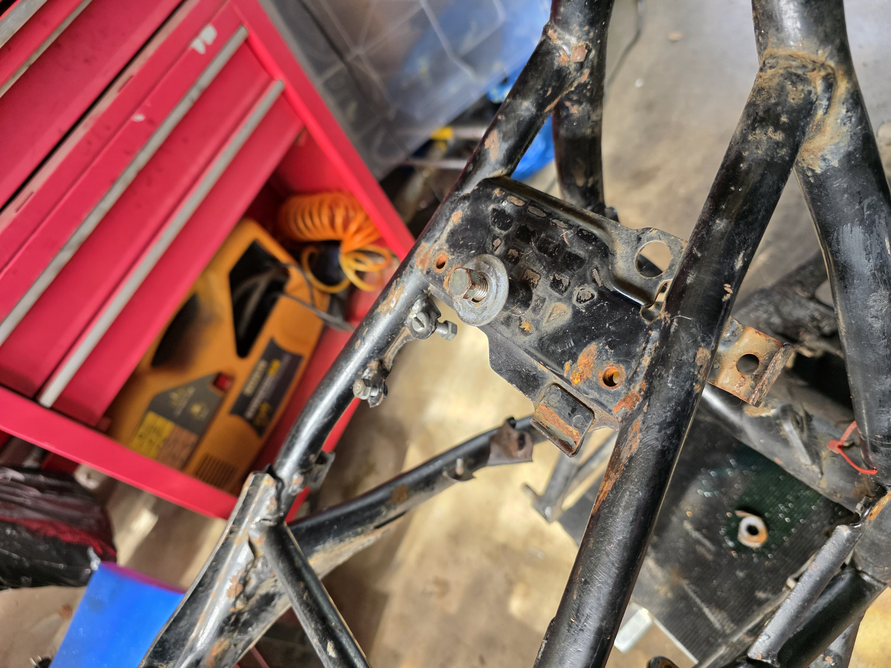
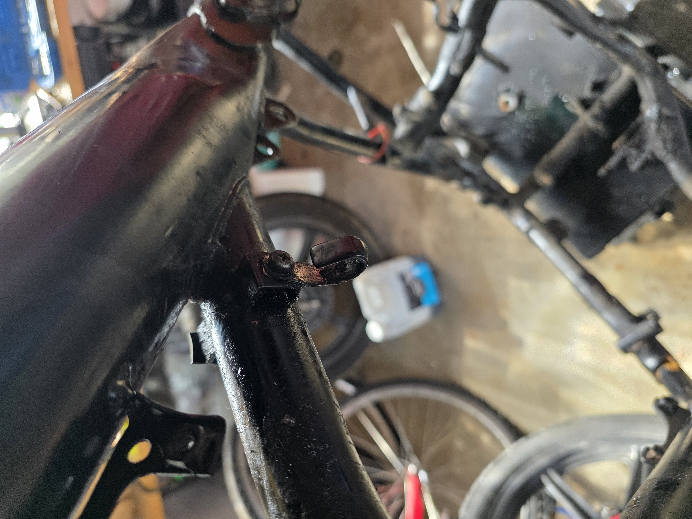
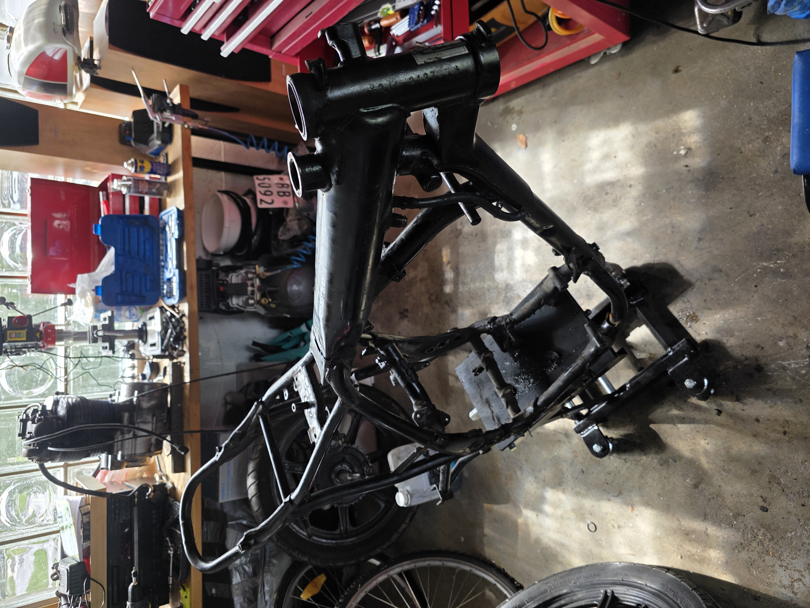
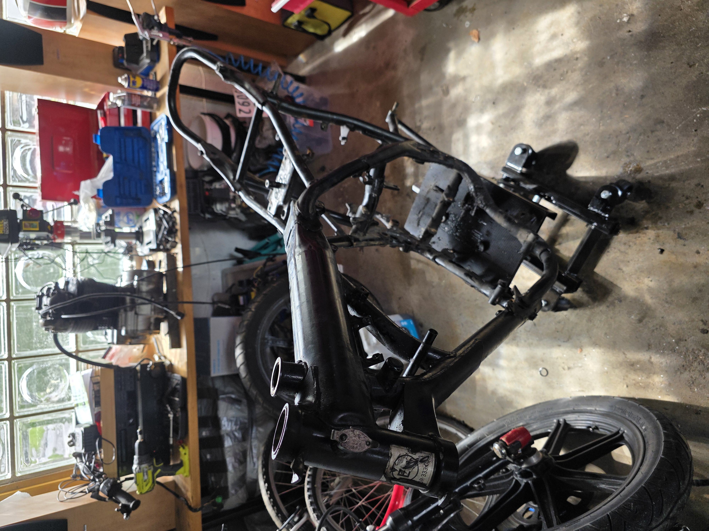
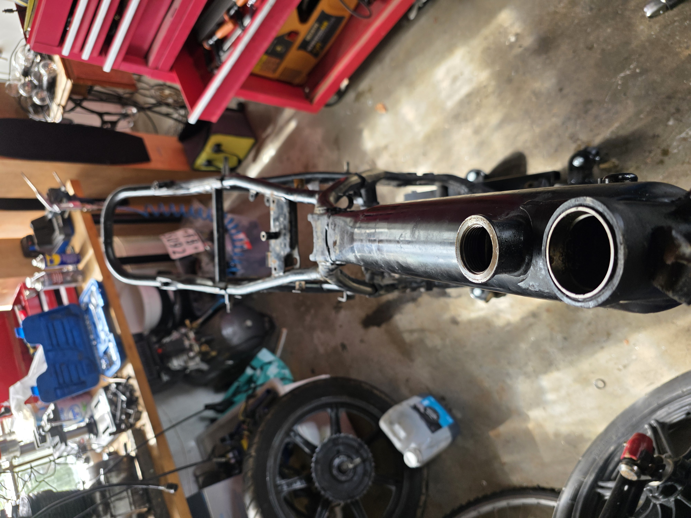

🏗️ Motor ute — ramma ribbet og klar for lakk
Forrige oppdatering var litt tidlig ute — motoren var riktignok løsnet, men først nå er den faktisk ute av ramma 🎉
Jobben gikk overraskende greit. Bare to bolter som sperret, begge lette å løsne. Motoren er vinklet ut og står klar for inspeksjon og overhaling.

Ramma er fullstendig ribbet — alle rammedeler er fjernet. Den har fått en runde med vask, men det sitter en del fett og gammel olje igjen som må bort før pulverlakkering.

✅ Gjort
- Motoren er ute av ramma — ingen overraskelser underveis
- Alle rammedeler demontert
- Ramma vasket én gang
- 37 nye bilder dokumenterer hele prosessen
🔜 Neste steg
- Dyprengjøring av ramma — Biltema avfettingsspray + høytrykksspyler
- Levere ramma til pulverlakkering
- Motoroverhaling: demontere, inspisere sylinder/stempel/ventiler, bytte pakninger
- Bestilling av deler: toppakningssett, motorfeste-bolter, ev. Vape tenning og motogadget elektronikk
- Rengjøring og klargjøring av motorblokk for ev. maling/puss
- Planlegge elektrisk system (mo.unit, motoscope pro, mo.switch)
Her er flere bilder fra dagens økt:



Når ramma er på lakkering blir det tid til å gå skikkelig gjennom motoren. Mer info kommer! 🔧